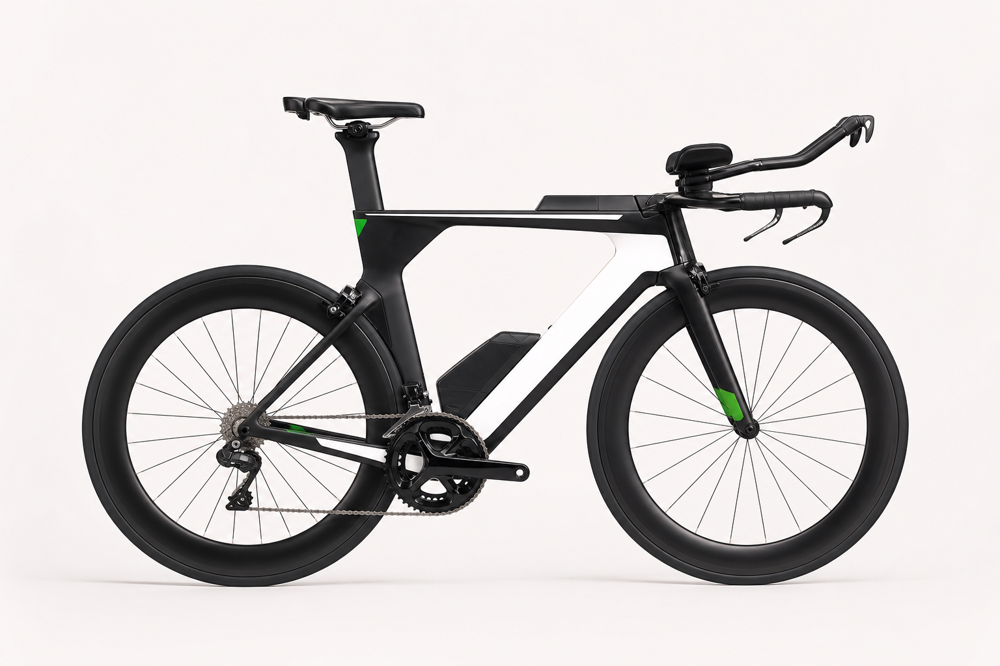

Descrição
A AeroVolt T1 Pro combina quadro aero em carbono, cockpit de triathlon, transmissão eletrônica e rodas de perfil alto. É uma configuração voltada para atletas que buscam eficiência em provas longas e treinos de ritmo constante.

Detalhes da bike
A estrutura segue o comportamento de uma página de produto, mas sem e-commerce: ela apresenta a bike, organiza as informações essenciais e leva o cliente para a conversa.
A AeroVolt T1 Pro combina quadro aero em carbono, cockpit de triathlon, transmissão eletrônica e rodas de perfil alto. É uma configuração voltada para atletas que buscam eficiência em provas longas e treinos de ritmo constante.
Produto anunciado como novo para fins de modelo visual. A disponibilidade, retirada, envio e eventuais ajustes são confirmados diretamente com a Giro Sport pelo WhatsApp.